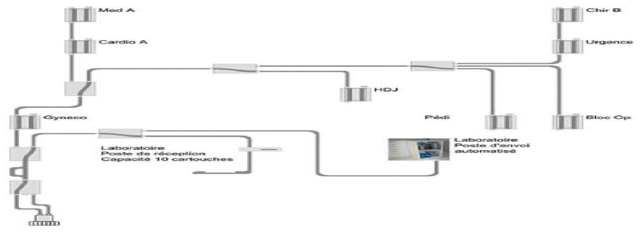
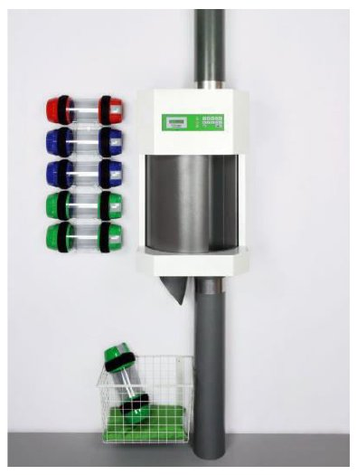

Préparer l'examen
Tout ce que le professeur a annoncé, rangé pour être compris et pas seulement récité. Pour chaque sujet : l'idée, ce que dit le cours (numéros de diapositive entre parenthèses), pourquoi c'est ainsi, puis les questions qu'on peut te poser, avec leur réponse cachée pour te tester.
Le fil rouge : le voyage d'un échantillon
Presque tout le programme se range sur un seul trajet : celui d'un tube de sang, du patient jusqu'au résultat. Retiens ce trajet, et chaque sujet trouve sa place :
| Étape du trajet | Sujets de l'examen qui s'y trouvent |
|---|---|
| Le cadre | le laboratoire, ses missions, ses secteurs |
| Avant la mesure | phase pré-analytique, ses erreurs, le transport pneumatique, la préparation : sérum, plasma, centrifugeuse |
| La mesure | spectrophotométrie et Beer-Lambert, automate de biochimie, hématologie (Coulter, cytométrie, hémoglobine), coagulation |
| Après la mesure | phase post-analytique, erreur post-analytique |
| Partout | biosécurité et risques au laboratoire |
Quand une question te bloque, demande-toi : à quelle étape du trajet suis-je ? La réponse en découle souvent.
Le laboratoire, ses missions et ses secteurs
L'idée. Un laboratoire transforme un prélèvement en information médicale fiable. Tout son plan est pensé pour que l'échantillon avance sans revenir en arrière.
Ce que dit le cours.
- Définition (diapo 6) : un laboratoire de biologie médicale (LBM) est une structure où sont effectués les examens de biologie médicale, des analyses destinées à confirmer un diagnostic, surveiller une pathologie ou évaluer un traitement.
- Missions (diapo 7) : diagnostic, suivi thérapeutique, prévention et dépistage, santé publique (épidémies, intoxications).
- Types (diapos 9 et 10) : privés ou hospitaliers ; mono-site ou réseau multisite ; laboratoire regroupé (« Core Lab »), laboratoires spécialisés, banque de sang.
- Secteurs (diapos 11 et 12) : réception, aire pré-analytique, aire analytique, locaux spécialisés (autopsie, morgue, prélèvement), rangements et dépôts, aires clinico-administratives, soutien au personnel.
Pour comprendre. Les secteurs suivent une logique de flux : on reçoit, on prépare, on analyse, dans cet ordre, sans croiser les chemins. Les bureaux sont « en retrait » pour qu'on n'ait pas à traverser les zones à risque. Les dépôts posent des contraintes (bruit, chaleur, azote liquide) : on ne les met pas n'importe où.
Ce qu'on peut te demander.
Définir : qu'est-ce qu'un LBM ?
Voir la réponse
Une structure où sont effectués les examens de biologie médicale, pour confirmer un diagnostic, surveiller une pathologie ou évaluer un traitement.
Citer : les missions, puis les secteurs.
Voir la réponse
Missions : diagnostic, suivi thérapeutique, prévention et dépistage, santé publique.
Secteurs : réception, aire pré-analytique, aire analytique, locaux spécialisés, rangements et dépôts, aires clinico-administratives, soutien au personnel.
Expliquer : pourquoi parle-t-on d'une organisation « en flux » ?
Voir la réponse
Parce que l'échantillon passe d'un secteur à l'autre dans un ordre précis : réception, préparation, analyse.
Ce sens unique évite les croisements, donc les confusions et les contaminations, et raccourcit les délais.
Le circuit et les trois phases
L'idée. Le circuit, ce sont les 7 étapes concrètes du trajet. Les phases regroupent ces étapes en trois blocs, autour de la mesure : avant, pendant, après. C'est la même histoire vue de plus loin.
Ce que dit le cours. Circuit (diapos 14 et 15) : prescription, prélèvement (identifié, étiqueté), transport (température, délai), réception et tri, préparation (centrifugation, aliquotage), analyse, validation et rendu.
| Phase | Définition (diapo 16) | Étapes du circuit |
|---|---|---|
| Pré-analytique | de la prescription jusqu'à l'arrivée de l'échantillon à l'analyseur | 1 à 5 |
| Analytique | processus technique qui donne un résultat d'analyse | 6 |
| Post-analytique | du résultat brut jusqu'à sa communication | 7 |
Phase pré-analytique, ses étapes (diapo 28) : prélèvement et identification, transport, réception, tri et préparation, conservation temporaire. Elle concentre 60 à 70 % des erreurs (diapo 262).
Pour comprendre pourquoi elle concentre les erreurs. C'est la phase la plus humaine et la plus éclatée : beaucoup de mains (secrétariat, préleveur, coursier, technicien), beaucoup de lieux, souvent hors du laboratoire, et peu d'automates pour contrôler. Une erreur faite ici (mauvais tube, mauvaise étiquette, attente trop longue) ne se voit pas à la mesure : l'automate mesure très bien un échantillon faux.
Phase post-analytique et erreur post-analytique. Le cours la définit par ses actes : validation biologique, interprétation médicale, communication du résultat au prescripteur et au patient dans un délai correct. Une erreur post-analytique est donc une erreur commise après une mesure juste, quand on valide, interprète ou transmet le résultat. Exemples ajoutés (le cours ne les liste pas) : un résultat incohérent validé quand même, une faute de saisie, un résultat envoyé au mauvais patient, un résultat critique transmis trop tard.
Ce qu'on peut te demander.
Décrire : le circuit d'un échantillon biologique.
Voir la réponse
Prescription, prélèvement (identifié et étiqueté), transport, réception et tri, préparation (centrifugation, aliquotage), analyse, validation et rendu.
Définir la phase pré-analytique, citer ses étapes, dire pourquoi elle est critique.
Voir la réponse
De la prescription à l'arrivée de l'échantillon à l'analyseur.
Étapes : prélèvement et identification, transport, réception, tri et préparation, conservation temporaire.
Critique : 60 à 70 % des erreurs, parce qu'elle fait intervenir beaucoup de personnes et de lieux, avec peu de contrôles automatiques.
Classer : à quelle phase appartient chaque erreur ? Tube citrate sous-rempli ; résultat transmis au mauvais service ; calibration oubliée.
Voir la réponse
Tube sous-rempli : pré-analytique (prélèvement).
Résultat au mauvais service : post-analytique (communication).
Calibration oubliée : analytique (la mesure elle-même).
Expliquer : à quoi correspond une erreur post-analytique ?
Voir la réponse
Une erreur faite après la mesure, pendant la validation, l'interprétation ou la communication du résultat.
Exemple : un résultat critique communiqué trop tard, ou transmis au mauvais patient.
Le transport pneumatique
L'idée. C'est l'étape « transport » du circuit, automatisée : au lieu qu'un coursier porte le tube, une capsule voyage seule dans des tuyaux, poussée ou aspirée par l'air.
Ce que dit le cours. Un système pneumatique pour laboratoire est un réseau de transport par tube, à air comprimé, qui achemine rapidement et en toute sécurité les échantillons (sang, urine, tissus) et les médicaments entre les unités de soins et le laboratoire central (diapos 214 à 222, page 72 et suivantes du support).

| Composant | Son rôle |
|---|---|
| Stations d'envoi et de réception | le guichet : on y met et on y reçoit les capsules (écran tactile, clavier, lecteur RFID) |
| Réseau de tuyauterie | la route : tubes en PVC de 110 ou 160 mm, coudes à grand rayon, réseau découpé en zones |
| Unités de soufflerie et d'aspiration (APU), turbines | le moteur : pression pour pousser en montée, dépression pour aspirer en descente |
| Diviseurs et aiguillages (diverters) | les carrefours : ils dirigent la capsule d'une ligne à une autre |
| Capsules de transport (carriers) | le véhicule : étanches, amorties, verrouillées, avec puce RFID ; rouge pour l'urgence, bleu ou vert pour la routine, jaune pour le risque biologique |
| Centre de contrôle logiciel | le chef de gare : suivi en temps réel, priorités (urgences STAT), historique |

Pour comprendre le freinage. Une capsule arrive vite (environ 5,5 m/s) avec des tubes de sang fragiles : un choc briserait les tubes ou ferait éclater les globules rouges (hémolyse). On utilise donc l'air lui-même comme frein :
- compression : la capsule pousse l'air devant elle ;
- fermeture de la vanne : juste avant l'arrivée, un capteur optique ou magnétique fait fermer la vanne d'échappement sous la station ;
- effet piston : l'air piégé entre la capsule et le fond ne s'échappe que très lentement, il se comprime et forme un coussin qui freine progressivement.
Puis l'amortissement physique absorbe le reste (butées en élastomère, ou mini-vérin à gaz ou à ressort), les capteurs valident l'arrêt, l'automate coupe la turbine et un clapet laisse glisser la capsule dans le bac rembourré.
Les questions annoncées.
1. À quoi sert un système de transfert pneumatique ?
Voir la réponse
À acheminer rapidement et en toute sécurité les échantillons biologiques (sang, urine, tissus) et les médicaments entre les unités de soins et le laboratoire central, par un réseau de tubes à air comprimé.
2. Citer les composants principaux du système.
Voir la réponse
Stations d'envoi et de réception ; réseau de tuyauterie ; unités de soufflerie et d'aspiration (APU) ou turbines ; diviseurs et aiguillages ; capsules de transport ; centre de contrôle logiciel.
3. Le composant désigné par A sur la figure : lequel, et quelles sont ses deux fonctions principales ?
Voir la réponse
Très probablement la station d'envoi et de réception. Ses deux fonctions :
L'envoi : on place l'échantillon dans une cartouche hermétique, on choisit la destination (clavier, badge, code), on insère la cartouche dans le sas ; la station se verrouille et la cartouche part dans le réseau.
La réception : la cartouche est ralentie, tombe doucement dans le bac ; un voyant ou un son prévient le personnel, qui la retire et valide la réception.
Si A désigne un autre composant : APU (créer une pression pour envoyer, une dépression pour aspirer) ; aiguillage (diriger la capsule vers la bonne ligne) ; capsule (contenir l'échantillon de façon étanche et le protéger).
4. Décrire le système de freinage par coussin d'air.
Voir la réponse
La capsule comprime l'air devant elle.
Juste avant l'arrivée, un capteur fait fermer la vanne d'échappement sous la station.
L'air piégé ne peut s'échapper que lentement : il se comprime et forme un coussin qui freine progressivement la capsule (effet piston).
Un amortissement physique (élastomère, vérin) absorbe le reste, puis la turbine s'arrête et la capsule glisse dans le bac.
Justifier : pourquoi faut-il freiner la capsule et limiter sa vitesse ?
Voir la réponse
Pour ne pas casser les tubes et éviter l'hémolyse : un choc fait éclater les globules rouges et fausse les résultats. Le transport fait partie de la phase pré-analytique, où naissent la plupart des erreurs.
Sérum, plasma et centrifugeuse
L'idée. La plupart des analyses se font sur la partie liquide du sang, pas sur les cellules. La centrifugeuse sépare les deux. La seule question est : a-t-on laissé le sang coaguler avant ?
Ce que dit le cours.
| Échantillon | Ce que c'est (diapo 45) | Comment on l'obtient (diapo 110) |
|---|---|---|
| Sang total | sang complet, cellules et plasma | tube avec anticoagulant, sans centrifuger |
| Plasma | liquide après centrifugation du sang anticoagulé | tube EDTA, citrate ou héparine, centrifugation immédiate |
| Sérum | liquide après coagulation complète | tube sec ou à gel : attendre la coagulation (30 à 60 min), puis centrifuger |
Centrifugation : 2 000 à 2 500 × g, 10 à 15 minutes, à température ambiante.
La centrifugeuse (diapos 108, 113 à 115) : un appareil qui fait tourner un mélange non homogène pour en séparer les constituants selon leur densité, grâce à la force centrifuge. Paramètres : vitesse (tours par minute, ou force centrifuge relative en × g), temps, température, rayon du rotor.
\[RCF = 1{,}118 \times 10^{-5} \times r\ (\text{cm}) \times (\text{RPM})^2\]Pour comprendre.
- En tournant, chaque particule est « poussée » vers l'extérieur d'autant plus fort qu'elle est dense : les cellules, plus lourdes, tombent au fond ; le liquide reste au-dessus.
- Plasma ou sérum ? Avec un anticoagulant, le sang reste liquide : on obtient le plasma. Sans anticoagulant, le sang coagule, le caillot emprisonne les cellules : le liquide restant est le sérum. Rappel général, pas écrit dans les diapositives : le plasma contient encore le fibrinogène, le sérum non, puisqu'il a été consommé par le caillot.
- La force dépend du rayon et du carré de la vitesse : c'est pourquoi on parle en × g et pas seulement en tours par minute, et pourquoi il faut équilibrer les tubes (masses égales en face) : un rotor déséquilibré vibre et peut casser des tubes, avec un risque d'aérosols.
Ce qu'on peut te demander.
Comparer : comment obtient-on le sérum ? Et le plasma ?
Voir la réponse
Plasma : tube avec anticoagulant (EDTA, citrate, héparine), centrifugation immédiate ; le liquide au-dessus des cellules.
Sérum : tube sec ou à gel, on attend la coagulation complète (30 à 60 min), puis on centrifuge ; le liquide au-dessus du caillot.
Définir la centrifugeuse et son principe ; citer ses paramètres et les précautions.
Voir la réponse
Appareil qui sépare les constituants d'un mélange selon leur densité, par la force centrifuge produite par la rotation.
Paramètres : vitesse (RPM ou × g), temps, température, rayon du rotor.
Précautions : équilibrer les tubes, éviter les vitesses excessives et les accélérations brutales (hémolyse), respecter la température, tubes adaptés.
Spectrophotométrie et loi de Beer-Lambert
L'idée. Une solution colorée « mange » une partie de la lumière qui la traverse. Plus elle contient de la substance colorée, plus elle en mange. En mesurant la lumière qui ressort, on remonte à la concentration.
Ce que dit le cours (diapos 269, 270, 298 à 301). Le spectrophotomètre mesure l'absorption et la transmission de la lumière par un échantillon. Une lumière d'intensité \(I_0\) entre dans la cuve, il en sort \(I_t\).
\[T = \frac{I_t}{I_0}\] \[A = \log_{10}\frac{I_0}{I_t} = \varepsilon \times l \times c\]- \(A\) : absorbance ; \(\varepsilon\) : coefficient d'absorption molaire (propre à la substance et à la longueur d'onde) ; \(l\) : trajet optique dans la cuve ; \(c\) : concentration.
- Plus la concentration augmente, plus l'absorbance augmente et plus la transmittance diminue.
- On travaille à la longueur d'onde d'absorption maximale, et on soustrait un blanc (tout sauf la substance) pour enlever l'absorption de fond.
Conditions de validité (diapo 301) : une lumière monochromatique ; une solution suffisamment diluée pour ne pas modifier les propriétés des molécules (association, complexation…).
Pour comprendre les deux conditions.
- Monochromatique : \(\varepsilon\) change avec la longueur d'onde. Avec plusieurs couleurs à la fois, il n'y a plus un seul \(\varepsilon\), et la relation \(A = \varepsilon l c\) ne tient plus.
- Diluée : si les molécules sont trop serrées, elles s'associent entre elles et n'absorbent plus comme des molécules isolées. La droite \(A = f(c)\) s'infléchit : doubler la concentration ne double plus l'absorbance.
Ce qu'on peut te demander.
Expliquer : que mesure un spectrophotomètre ?
Voir la réponse
La lumière absorbée et transmise par un échantillon ; l'absorbance, proportionnelle à la concentration, permet de doser une substance.
Énoncer la loi de Beer-Lambert et donner ses conditions de validité.
Voir la réponse
\(A = \log_{10}(I_0/I_t) = \varepsilon \times l \times c\)
Lumière monochromatique.
Solution suffisamment diluée (pas d'association ni de complexation des molécules).
Justifier : pourquoi mesure-t-on un blanc ?
Voir la réponse
Pour retirer ce qu'absorbent la cuve, le solvant et les réactifs : on ne garde que l'absorbance due à la substance dosée.
L'automate de biochimie
L'idée. C'est un spectrophotomètre automatisé qui enchaîne des centaines de dosages : il prend l'échantillon, ajoute le réactif qui produit la couleur, attend à 37 °C, mesure l'absorbance, lave, recommence.
| Unité (diapo 277) | Fonction |
|---|---|
| Carrousel d'échantillons (ASP) | charge les tubes, les amène en position d'aspiration |
| Carrousel de réactifs (RCU) | charge les flacons de réactifs, conservation réfrigérée |
| Pompe d'échantillonnage (SPP) | aspiration précise de l'échantillon et de l'eau pure |
| Pompe de réactifs (RPP) | aspiration précise des réactifs |
| Carrousel de réaction | support des cuves photométriques, maintien à 37 °C |
| Unité d'agitation (MIX) | homogénéise échantillon et réactifs |
| Système de détection photométrique | photomètre, filtres de 340 à 620 nm |
| Unité de lavage (WU) | lave les cuves, vérifie leur propreté optique |
Pour comprendre l'architecture. Chaque unité correspond à un geste du dosage manuel : prendre l'échantillon (carrousel et pompe d'échantillon), prendre le réactif (carrousel réfrigéré et pompe de réactifs : réfrigéré pour qu'il ne se dégrade pas), mélanger, laisser réagir à 37 °C (la réaction enzymatique dépend de la température), lire l'absorbance (Beer-Lambert), puis laver la cuve pour le dosage suivant. Le mode accès aléatoire permet de lancer n'importe quel test à la demande (séries, urgences, profils).
Ce qu'on peut te demander.
Décrire l'architecture d'un automate de biochimie, puis son fonctionnement.
Voir la réponse
Architecture : carrousel d'échantillons, carrousel de réactifs réfrigéré, pompe d'échantillonnage, pompe de réactifs, carrousel de réaction à 37 °C, unité d'agitation, détection photométrique (340 à 620 nm), unité de lavage.
Fonctionnement : aspiration de l'échantillon, ajout du réactif, homogénéisation, incubation, détection, lavage des cuves, selon un programme ; accès aléatoire.
Justifier : pourquoi le carrousel de réaction est-il à 37 °C et celui des réactifs réfrigéré ?
Voir la réponse
37 °C : la réaction se fait à une température fixe et proche du corps, pour être rapide et reproductible.
Réfrigéré : les réactifs se conservent mieux au froid entre deux dosages.
Hématologie : Coulter, cytométrie, hémoglobine
L'idée. En hématologie, on compte et on décrit des cellules. Deux principes : électrique (Coulter) et optique (cytométrie). L'hémoglobine, elle, se dose comme en biochimie, par la lumière.
Ce que dit le cours.
- Coulter, variation d'impédance (diapo 400), méthode de référence : les cellules, dans un électrolyte, passent par une petite ouverture traversée par un courant. Chaque passage change la tension : une impulsion proportionnelle à la taille de la cellule. Nombre de cellules = nombre d'impulsions.
- Mesure optique (diapo 402) : cytométrie en flux et diffraction. Une hydrofocalisation aligne les cellules en file indienne devant un laser ou une lampe au tungstène ; on analyse la lumière qu'elles renvoient.
- Hémoglobine (diapo 404) : dosée par spectrophotométrie, entre 525 et 550 nm, après lyse des hématies.
Pour comprendre.
- Coulter : une cellule conduit mal le courant, bien moins que le liquide salé autour. Quand elle bouche un instant l'orifice, la résistance monte : une impulsion. Plus la cellule est grosse, plus l'impulsion est grande. On obtient à la fois le nombre et la taille.
- Cytométrie : en file indienne, chaque cellule passe seule dans le faisceau ; la lumière qu'elle diffuse dit sa taille et sa structure interne.
- Hémoglobine : elle est dans les globules rouges. On les fait éclater (lyse) pour la libérer dans la solution, puis on mesure son absorbance comme n'importe quelle substance colorée : c'est Beer-Lambert appliqué à l'hématologie.
Ce qu'on peut te demander.
Par quelle technique mesure-t-on l'hémoglobine ? Pourquoi lyser les hématies ?
Voir la réponse
Par spectrophotométrie, entre 525 et 550 nm, après lyse des hématies.
La lyse libère l'hémoglobine contenue dans les globules rouges, pour que toute la solution l'absorbe de façon homogène.
Expliquer le principe de Coulter, puis celui de la cytométrie en flux ; comparer.
Voir la réponse
Coulter : chaque cellule qui passe par l'orifice traversé par un courant crée une impulsion proportionnelle à sa taille ; on compte les impulsions. Principe électrique, méthode de référence.
Cytométrie : les cellules alignées par hydrofocalisation passent une à une devant un laser ; la lumière diffusée renseigne sur leur taille et leur structure. Principe optique, plus riche en informations.
La coagulation (hémostase)
L'idée. Quand un vaisseau se blesse, le corps bouche d'abord le trou vite et grossièrement, puis le consolide, puis nettoie une fois la plaie réparée.
Ce que dit le cours (diapo 451 et suivantes). L'hémostase colmate les fuites du circuit vasculaire et rétablit le flux en cas de thrombose. Acteurs : paroi vasculaire, plaquettes, protéines plasmatiques. Trois étapes :
- hémostase primaire (3 à 5 min) : les plaquettes s'agrègent, formation du clou plaquettaire ;
- coagulation plasmatique (5 à 10 min) : formation du caillot de fibrine ;
- fibrinolyse (48 à 72 h) : dissolution du caillot.
Pour comprendre le lien avec le laboratoire. Pour étudier la coagulation, il faut que le sang n'ait pas déjà coagulé dans le tube : on prend un tube citrate, rempli jusqu'au trait, parce que le rapport sang et anticoagulant compte (sous-rempli, TP et TCA faussés). Transport à température ambiante, analyse en moins de 4 heures. C'est encore la phase pré-analytique qui décide de la justesse du résultat.
Ce qu'on peut te demander.
Citer et décrire les trois étapes de l'hémostase.
Voir la réponse
Hémostase primaire : agrégation des plaquettes, clou plaquettaire (3 à 5 min).
Coagulation : caillot de fibrine (5 à 10 min).
Fibrinolyse : dissolution du caillot (48 à 72 h).
Justifier : pourquoi un tube citrate sous-rempli fausse-t-il le bilan de coagulation ?
Voir la réponse
Le rapport entre le sang et l'anticoagulant n'est plus le bon : trop d'anticoagulant pour trop peu de sang, et les temps de coagulation (TP, TCA) sont faussés.
Biosécurité et risques au laboratoire
L'idée. On manipule des échantillons qui peuvent être infectieux, des produits dangereux et des machines : il faut protéger les personnes, l'entourage et l'environnement, à chaque étape du trajet.
Ce que dit le cours. La biosécurité (diapo 29) vise à informer sur les dangers, principalement biologiques, à évaluer les risques et à les gérer ; elle fixe les pratiques qui protègent le technologue, son entourage et l'environnement.
| Risque | Exemples | Prévention |
|---|---|---|
| Biologique | bactéries, virus, parasites | EPI, formation, vaccination |
| Chimique | produits corrosifs, toxiques, inflammables | signalisation, fiches de sécurité, ventilation, stockage adapté |
| Physique | bruit, chaleur, froid, rayonnements | signalisation, équipements de protection |
| Électrique, incendie, radiologique, informatique | présentation de l'ingénieur biomédical | terre, protections, onduleur ; détection incendie ; normes ISO 15190, ISO 35001, IEC 61010 |
Risques liés aux équipements (diapo 30) : automates (pièces mobiles, aiguilles), centrifugeuses (aérosols si un tube casse), congélateurs (explosion d'azote liquide, brûlures par le froid), hottes et PSM (inefficaces si mal entretenues).
Pour comprendre. Les quatre niveaux BSL montent avec la dangerosité de l'agent : plus il est dangereux (surtout par inhalation), plus le laboratoire est fermé et contrôlé. Et l'EPI n'est que la dernière barrière : la vraie sécurité se conçoit en amont (locaux, flux, équipements entretenus, formation).
Ce qu'on peut te demander.
Définir la biosécurité ; citer les différents risques et un moyen de prévention pour chacun.
Voir la réponse
Informer sur les dangers (surtout biologiques), évaluer les risques et les gérer, pour protéger le technologue, son entourage et l'environnement.
Biologique : EPI, vaccination. Chimique : ventilation, stockage, fiches de sécurité. Physique : protections, signalisation. Électrique : terre, protections, onduleur.
Citer les niveaux de biosécurité avec un exemple.
Voir la réponse
BSL-1 : non pathogènes (enseignement). BSL-2 : la plupart des laboratoires cliniques. BSL-3 : Mycobacterium tuberculosis. BSL-4 : virus Ebola.
Expliquer : quel risque présente une centrifugeuse ?
Voir la réponse
Si un tube se brise, l'échantillon est projeté en aérosol : risque biologique. D'où l'équilibrage des tubes et le respect des vitesses.